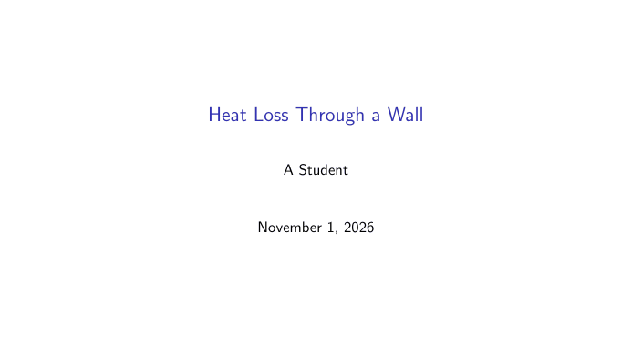
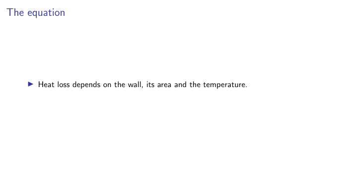
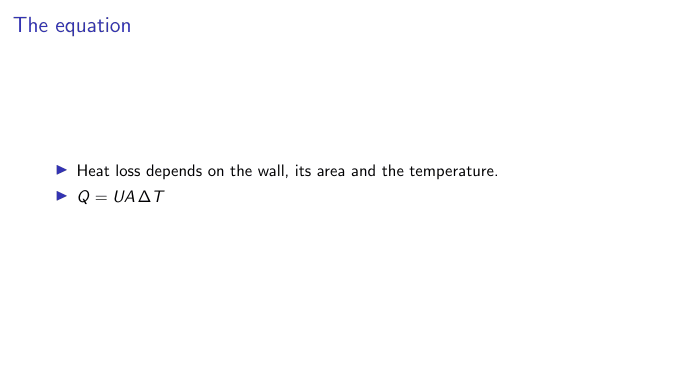

Slides with Beamer
slides.tex
% Slides with the beamer class. Build: pdflatex slides
\documentclass[aspectratio=169]{beamer}
\usetheme{default}
\setbeamertemplate{navigation symbols}{}
\title{Heat Loss Through a Wall}
\author{A Student}
\begin{document}
\begin{frame}
\titlepage
\end{frame}
\begin{frame}{The equation}
\begin{itemize}
\item<1-> Heat loss depends on the wall, its area and the temperature.
\item<2-> $Q = U A \, \Delta T$
\end{itemize}
\end{frame}
\end{document}It compiles to three PDF pages, because each reveal is its own page:



<1-> and <2-> reveal items one click at a time. \usetheme changes the look.
Posters
The beamerposter, tikzposter and baposter packages make large single pages. Set the paper size, then build it like any other document.
Word
Journals and co-authors often want .docx. Pandoc converts LaTeX, including citations:
pandoc main.tex -o main.docx --citeproc --bibliography=refs.bibPandoc writes equations as editable Word equations, and --csl with a style file sets the citation style. Complex layouts and custom commands may not survive, so always check the result, especially tables. My research-helpers package has a latex2docx tool built for this.
Web pages
Pandoc also makes HTML. pandoc main.tex -o main.html --mathjax gives one page, with equations drawn by MathJax in the browser. For a whole site, split the document by section, and let a site generator such as MkDocs handle the navigation.
Things need care in conversion, so test the result in a browser. In my own pamphlet project, these all caused real faults:
- Dollar signs for money turned text into maths.
- Print-only commands such as
\topruleshowed in red inside equations. - Commands the browser doesn't know, such as
\pounds, needed defining. - Labels needed converting into links and numbers.
PowerPoint and images
PowerPoint has no good route from LaTeX, so the reliable method is to compile to PDF, turn each page into an image, then build a deck with those images and speaker notes:
from research_helpers.carousel import pdf_to_images, images_to_pptx
images = pdf_to_images("slides.pdf", "images", pixels=1440)
images_to_pptx(images, "slides.pptx", notes=["Read this aloud."] * len(images))The slides look exact, though you edit them in LaTeX and not in PowerPoint.
One source, many outputs
The principle across all of these is to edit one source and generate everything else. The Git and automation guide shows how to make this happen by itself.
Text © Ahmad Ammar, licensed under CC BY 4.0. Example code © Ahmad Ammar, MIT licence. Written during a PhD supported by a Vice-Chancellor's Research Scholarship (VCRS) from Ulster University.